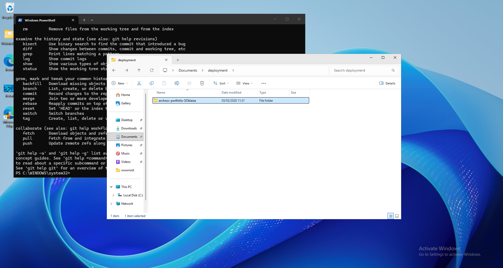
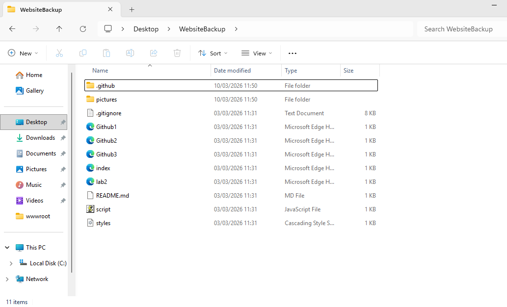
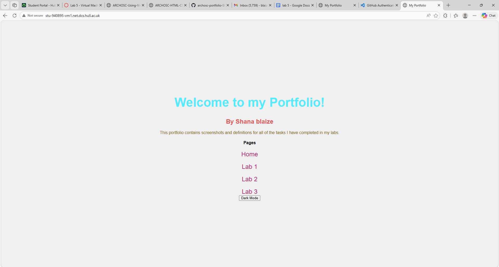

VM Lab
1. Installing GitHub on VM1
This is evidence that GitHub has been installed on my Virtual Machine 1.

2. Creating the Portfolio Folder
A folder for my ARCHOSC project portfolio has been created inside VM1.

3. Cloning Portfolio Files
Folders and files from my portfolio have been cloned from GitHub into VM1.

4. Making a Local Change
This is the change I made to my portfolio to show that it could be accessed and edited from my local machine.

5. VM Setup Continued
Further steps taken during the VM access lab.

6. Final VM Access Step
The final step completed during the VM access lab.